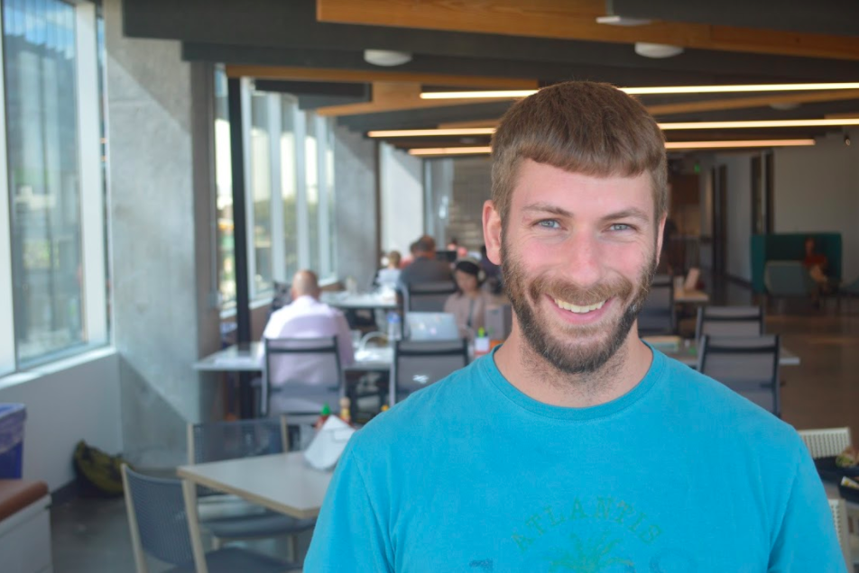

About Me
-

Early Years
Alaska
I was born and raised in Alaska and graduated from Dimond High School. I began working at the age of 14 and held various jobs including: concession stand worker, carpet cleaner, steel worker, bus boy, oil field worker, painter's assistant, and facilities assistant.
-

June 2011
Graduation
After graduation I worked professionally creating visual media in many forms: I executed a number of editing endeavors; edited regional commercials that aired statewide on both FOX and ABC and edited the news in a linear and non-linear format; co-produced and edited a 30-minute sports show special; wrote, shot, and voiced news pieces and commercials; assisted clients through all steps of storyboard planning; conceptualized commercial themes, wrote scripts, edited dozens of news story promos. I also shot live and pre-recorded shows for ABC, NBC, FOX as well as a live and pre-recorded local political talk shows. Additional work included conceptualizing numerous designs and implementing the designs using Photoshop, After Effects, Apple Motion, and several other video and graphic design programs. I also created graphics, logos and full page graphic designs, created sidebars and lower thirds. I communicated directly with clients. As the liaison between the client and the station, I worked to make client ideas a reality while also communicating the technical boundaries to the client.
-

Visual Media Experience
Creating Visual Media
I continued my media career, and went on to shoot live and pre-recorded shows for ABC, NBC, FOX as well as a live and pre-recorded local political talk shows. I conceptualized many designs and implemented those designs using Photoshop, After Effects, Apple Motion, and several other video and graphic design programs. Created graphics, logos and full page graphic designs, created sidebars and lower thirds. Acted as a liaison between the client and the station. Making ideas a reality while also communicating technical boundaries to the client.
-

Web Development and UX
While attending the Galvanize full stack web development program I executed a number of projects using JavaScript(ES2016) specifically: Angular, Postgres, Express, Node.js. I also completed other tasks involved with web design including: producing original ideas for new projects, assisting on proof of concept presentations, writing user stories, maintaining scrum boards, and researching different technologies. When the Galvanize full stack web development ended, I worked under contract as a UX designer for startups on web development projects. Tasks included: information architecture, high fidelity prototyping for custom software, speaking with clients to find out their needs and to develop efficient solutions to business problems, iteration through prototypes with the clients and team members to find feasible solutions and meet the client's needs. I also created animated web banner ads, produced original ideas for new projects, and assisted on proof of concept presentations.
-

My next adventure!